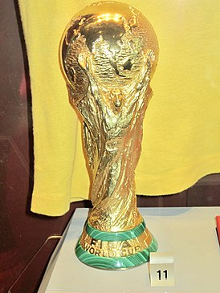
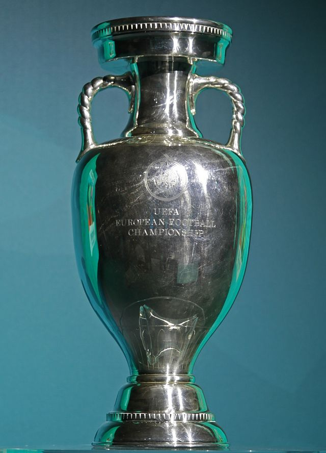

Нынешний трофей главного клубного турнира Европы отличается от своего предшественника по дизайну.Старый кубок первоначально представлял собой большую серебряную амфору высотой 60 сантиметров с надписью на французском языке «Кубок европейских клубов чемпионов». Кубок Лиги чемпионов представляет собой серебряную амфору с золотым покрытием внутри. Высота современного кубка — 73,5 сантиметра, масса — семь с половиной килограмм, номинальная стоимость — 10 тысяч швейцарских франков. На задней стенке Кубка выгравированы названия клубов, становившихся его обладателями в разные годы.

